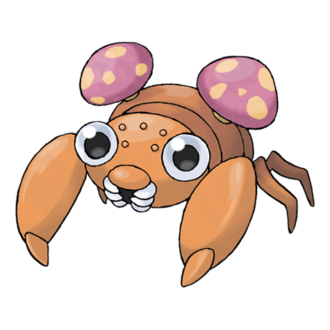
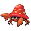

Назад
Парас

Парас — Покемон 1 поколения под номером 46 в Покедекс. Обитает он в регионе Канто и относится к Травяному и Жучиному типу. На спине Параса растут паразитические грибы, называемые точукасо. Они растут, поглощая питательные вещества этого Покемона насекомого. Эти грибы высоко ценятся как лекарство для продления жизни.
Тип:
Травяной
Жук
Эволюция
# 046 Парас
=>

# 047 Парасект